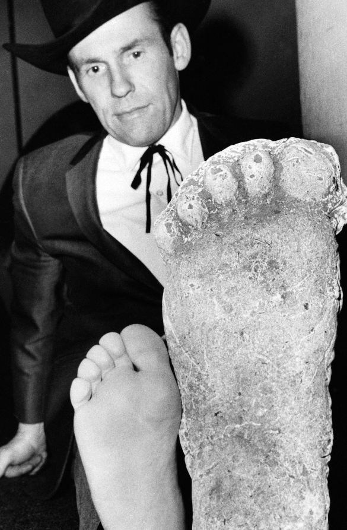

Where It All Began
Before the name "Bigfoot" was ever known, the Indigenous peoples across North America already had their own tales of hair-covered, man-like creatures roaming in the wilderness. In fact, that is where the name "Sasquatch" (meaning "wild man") originates. The coining of the name, "Bigfoot" comes from a bulldozer operater in California finding a pair of 16 inch human-like footprints in the Six Rivers National forest. There have been various Bigfoot sightings throughout North America, with the earliest one recorded in 1930. But even with numerous first-hand accounts of running into the infamous Sasquatch, there has never been any definitive proof of its existence.
Other Names
Although the names "Bigfoot" and "Sasquatch" are most commonly used, this hairy monster is called various other names in other regions:
- "Skunk Ape" in Flordia
- "Grassman" in Ohio
- "Fouke Monster" in Arkansas
- "The Big Muddy Monster" in Illinois
- "The Old Man of the Mountain" in West Virginia
Physical Description
Big Food is described as a bipedal primate, ranging from 6 to 12 feet tall, with a foul odor and moves silently, though it can also emit a high-pitched scream. This is not unlike the Yeti, also known as the Abominable Snowman, which roams the Himalayas. In fact, many comparisons between the two have been made, with some remarking Bigfoot as the "Yeti of North America."